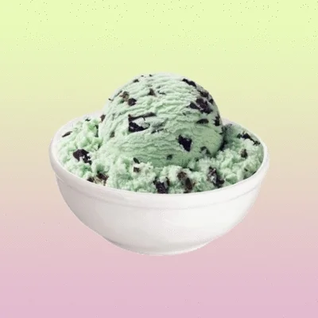
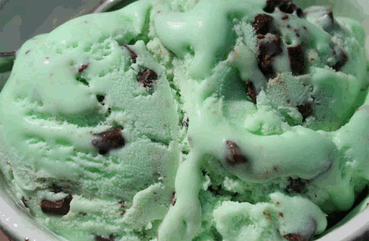

mintchocolatechip
MINT CHOCOLATE CHIP ICE CREAM☞
here is how to make mint chocolate chip ice cream!!

this is what yours should look like!✓
★INGREDIENTS★
- whole milk (cold, do not use whole milk)
- sugar (granulated)
- heavy cream (cold)
- pure peppermint extract (you may also use vanilla)
- semi-sweet chocolate bar
★AMOUNTS★
- 1 cup of whole milk
- ¾ cup granulated sugar
- 2 cups of heavy cream
- 1.5-2 tsp peppermint extract (or to taste)
- 4-oz semi sweet chocolate bar (chopped into tiny pieces)
★INSTRUCTIONS★
- take a bowl and a whisk
- use the whisk to combine the milk and sugar
- do this until the sugar is dissolved
- stir in the heavy cream
- stir in the peppermint
- turn on the ice cream maker
- pour the mixture in
- let it churn for around 25 minutes
- during the last five minutes of churning add the chocolate
- transfer ice cream in an airtight container
- leave it for at least 2-3 hours

Recipe originally found on: Chew Out Loud